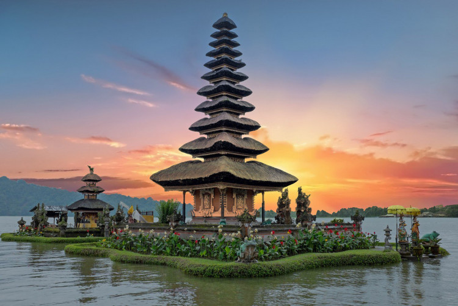

Keindahan Alam Indonesia -Indonesia terkenal di mancanegara sebagai negara dengan alam yang indah. Negara kepulauan seluas 1,91 juta km2 ini memang memiliki bentang alam yang memesona, mulai dari Aceh hingga Papua. Tak heran jika jumlah wisatawan yang datang terus bertambah, baik dari dalam maupun luar negeri untuk melihat langsung ragam keindahan wisata alam yang ada di Indonesia.

Gunung Bromo (dari bahasa Sanskerta: Brahma, salah seorang Dewa Utama dalam agama Hindu) atau dalam bahasa Tengger dieja "Brama", adalah sebuah gunung berapi aktif di Jawa Timur, Indonesia. Gunung ini memiliki ketinggian 2.329 meter di atas permukaan laut dan berada dalam empat wilayah kabupaten, yakni Kabupaten Probolinggo, Kabupaten Pasuruan, Kabupaten Lumajang, dan Kabupaten Malang. Gunung Bromo terkenal sebagai objek wisata utama di Jawa Timur. Sebagai sebuah objek wisata, Bromo menjadi menarik karena statusnya sebagai gunung berapi yang masih aktif. Gunung Bromo termasuk dalam kawasan Taman Nasional Bromo Tengger Semeru.
2020

Pulau Komodo adalah sebuah pulau yang terletak di Kepulauan Nusa Tenggara, berada di sebelah timur Pulau Sumbawa, yang dipisahkan oleh Selat Sape. Pulau Komodo dikenal sebagai habitat asli hewan komodo. Pulau ini termasuk salah satu kawasan Taman Nasional Komodo yang dikelola oleh Pemerintah Pusat. Secara administratif, pulau ini termasuk wilayah Kabupaten Manggarai Barat, Kecamatan Komodo, Provinsi Nusa Tenggara Timur, Indonesia. Pulau Komodo merupakan ujung paling barat Provinsi Nusa Tenggara Timur, berbatasan dengan Provinsi Nusa Tenggara Barat.
2020

Nama Pantai Pink sebenarnya hanya nama julukan. Pantai ini aslinya bernama Pantai Tangsi. Namun karena pasir mempunyai warna pink, jadilah pantai ini lebih populer dengan sebutan Pantai Pink.Hamparan bukit yang mengelilingi Pantai membuat kecantikan pantai ini semakin bertambah sempurna. Pada bagian kiri pantai terdapat bukit dengan padang rumput hijau yang luas terhampar. Di atas bukit inilah pemandangan Pantai akan tampak lebih menawan dan menakjubkan.
2020